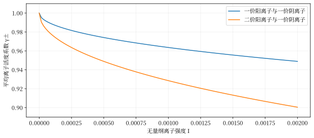

LECTURE 20 · 2026-11-19
电化学Ⅰ：离子活度、半反应与电池
20.1 · ION THERMODYNAMIC FUNCTIONS
离子生成热力学量的参考点
离子进入水后既与水相互作用，也受其他离子影响。热化学实验直接测到的是电中性的总反应，例如 Ag(s)＋半摩尔 Cl2(g)→Ag+(aq)＋Cl−(aq)。若要把总生成量拆成各离子的数值，需要约定一个共同参考点。水溶液热力学表通常将 H+(aq) 的标准生成焓和标准生成 Gibbs 能取为零。
以 H2 与 Cl2 各半摩尔生成 H+(aq)＋Cl−(aq) 的反应为例，标准反应焓为 −167.2 kJ·mol−1，标准反应 Gibbs 能为 −131.2 kJ·mol−1。按上述约定，两个值分别归到 Cl− 的生成焓和生成 Gibbs 能上。再用银离子和氯离子一起生成的反应数据，就可相减得到 Ag+ 对应数值。
若采用总焓 −61.62 kJ·mol−1、总 Gibbs 能 −54.12 kJ·mol−1，则 Ag+ 的标准生成焓约 ＋105.58 kJ·mol−1，标准生成 Gibbs 能约 ＋77.08 kJ·mol−1。计算前先把方程式配平为一个 Ag+ 和一个 Cl−，避免把生成盐或不同氯离子计量的数据混在一起。
来源：PChem1_lec20 Electrochemistry1 20261119.pdf，第 1–3 页。
20.2 · STANDARD ION ENTROPIES
水合与相对标准熵
单离子标准熵也以 H+(aq) 为参考，取其数值为零。某些水合离子的表列相对标准熵为负，例如 Mg2+。高电荷密度离子可强烈定向、束缚附近水分子，降低局部可用排列数。Cl− 的表列值约为正 57 J·K−1·mol−1，Mg2+ 约为负 128 J·K−1·mol−1，二者都在同一约定下使用。
组成电中性反应后，各离子系数加权并与其他组分相加，可得到可测的总反应熵。类似地，表列生成焓或 Gibbs 能用于计算总反应量时，要始终保持同一套溶剂、温度和标准态。
来源：PChem1_lec20 Electrochemistry1 20261119.pdf，第 4 页。
20.3 · ACTIVITIES
离子活度与质量摩尔浓度
以质量摩尔浓度 bi 表示离子含量，标准浓度 b°=1 mol·kg−1。离子活度 ai 是无量纲量，活度系数 γi 描述相同浓度下偏离理想稀溶液的部分。在选定标准态后，无限稀释时 γ 趋近 1。
把活度的乘积拆开，μi 等于同浓度理想稀溶液的化学势加 RT ln γi。真实离子相互作用较强，低浓度时也可能对精密计算产生明显影响。质量摩尔浓度以溶剂质量作分母，配制后随温度改变较稳定，常用于离子活度模型。
来源：PChem1_lec20 Electrochemistry1 20261119.pdf，第 5–7 页。
20.4 · MEAN ACTIVITY COEFFICIENT
用平均离子活度系数表示整个电解质
对 MpXq，每摩尔电解质给出 p mol 阳离子和 q mol 阴离子，令 s=p＋q。电解质的化学势为 pμ+＋qμ−。将活度系数的对数项合并，可用平均离子活度系数 γ± 表示。实验中通常由电中性组合得到 γ±。
1∶1 电解质的 γ± 为 γ+γ− 的平方根。CaCl2 则取 γCaγCl2 的立方根。平均离子浓度 b± 同样以计量数加权，满足 b±s=b+pb−q。完全解离的 CaCl2 分析浓度为 b 时，平均离子浓度为 4 的立方根乘 b，计算时要保留盐解离的计量系数。
来源：PChem1_lec20 Electrochemistry1 20261119.pdf，第 6–7 页。
20.5 · IONIC ATMOSPHERE
离子氛与离子强度
中心阳离子周围平均有较多阴离子，中心阴离子周围平均有较多阳离子，这种时间平均的电荷分布称离子氛。离子氛与中心离子电性相反，使离子在实际溶液中的化学势偏离独立粒子的理想模型。它是动态分布，会随着离子的移动与涨落改变。
离子强度把所有离子的浓度按电荷数平方加权。本章使用无量纲离子强度。价数以带符号整数表示，但平方后贡献均为正。
分析浓度为 b 的 NaCl 给 I=bb°−1。CaCl2 中 Ca2+ 为 b，Cl− 为 2b，得到 I=3bb°−1。混合盐溶液先分别列出实际离子浓度，共有离子要加和，再求各项。多价离子的贡献因平方权重而迅速增加。
来源：PChem1_lec20 Electrochemistry1 20261119.pdf，第 8–9 页。
20.6 · DEBYE–HÜCKEL LAW
Debye–Hückel 极限定律及计算
在足够稀的溶液里，Debye–Hückel 模型将离子看作处在连续介电介质中，通过离子氛的平均静电作用求活度修正。对于二元电解质，常用的平均离子极限定律如下，log 以 10 为底，A 由温度、溶剂介电性质等决定。
按这里的无量纲 I 定义，25 °C 水中 A≈0.509。5.0×10−4 mol·kg−1 KCl 的 I=5.0×10−4，log γ±≈−0.01138，γ±≈0.974。若换成同分析浓度的 CaCl2，I=0.0015，再乘 |2×(−1)|，得 log γ±≈−0.0394，γ±≈0.913。
适用程度随电荷与离子强度变化，价数高时偏离常更明显。浓度进一步提高，离子尺寸与短程相互作用开始重要，可使用带有效尺寸项的扩展形式。课内经验写法的分母含 1＋B√I，B 是与所取参数约定相联系的量。更浓的体系通常需要更充分的活度模型或实验数据。

来源：PChem1_lec20 Electrochemistry1 20261119.pdf，第 9–11 页。
20.7 · ELECTRODES AND HALF-REACTIONS
四类电极对应的半反应
电极与其接触的电解质组成一个电极区。电极提供电子传输通道，电解质提供离子传输通道。电子转移参与者若没有适合直接接线的固体，可用 Pt 等惰性导体接触相应物种。把半反应统一写成还原方向，有助于按相同标准比较。
| 电极 | 表示方法 | 还原半反应 |
|---|---|---|
| 金属／金属离子 | Cu | Cu2+ | Cu2+＋2e− → Cu |
| 金属／难溶盐 | Ag | AgCl | Cl− | AgCl＋e− → Ag＋Cl− |
| 气体电极 | Pt | H2 | H+ | 2H+＋2e− → H2 |
| 溶液氧化还原电极 | Pt | Fe3+, Fe2+ | Fe3+＋e− → Fe2+ |
AgCl(s) 的溶解可由 AgCl＋e−→Ag＋Cl−，加上 Ag→Ag+＋e− 得到。电子和金属银相消，得到 AgCl→Ag+＋Cl−。用电极半反应拼合整体反应，是后续把电势与溶解平衡联系起来的基础。
来源：PChem1_lec20 Electrochemistry1 20261119.pdf，第 12–14 页。
20.8 · HALF-REACTION QUOTIENTS
半反应的反应商怎样写
对于 Ox＋ne−→Red，反应商按物种活度写，电子由电极电子库处理。纯固体和纯液体处于各自标准态时活度取 1。Cu2+＋2e−→Cu(s) 的 Q 为铜离子活度的倒数。对溶液中的两个不同价态，则分别保留其活度。
O2＋4H+＋4e−→2H2O 的完整反应商为水活度的平方，除以氧气活度与氢离子活度的四次方。稀水溶液中水活度近似为 1，低压氧气可用分压除标准压力近似。
来源：PChem1_lec20 Electrochemistry1 20261119.pdf，第 15–16 页。
20.9 · GALVANIC AND ELECTROLYTIC CELLS
阳极氧化、阴极还原与极性
阳极发生氧化，阴极发生还原，这两个名称按反应类型确定。原电池依靠自发总反应产生电功，阳极释放电子进入外电路，阴极从外电路得到电子，因此通常阳极为负极、阴极为正极。电解池由电源推动选定方向，电源从阳极抽走电子，并向阴极供给电子，通常阳极为正极、阴极为负极。
以 Zn 和 Cu 两半电池组成的原电池为例，Zn→Zn2+＋2e− 在阳极，Cu2+＋2e−→Cu 在阴极。外电路电子由锌流向铜。电解质中的离子迁移与盐桥离子扩散维持各区近似电中性，使反应能够持续。对接电池图、仪器端子与反应方程时，应分别标出反应位置、电子流和正负极。
来源：PChem1_lec20 Electrochemistry1 20261119.pdf，第 13、17–18 页。
20.10 · CELL NOTATION
电池符号和总反应
单竖线表示相界面，同一相内不同物种用逗号分开。液接界面可用虚线或竖向点线标注，双竖线通常表示有盐桥并将液接电势作可忽略处理。写成 Zn(s) | ZnSO4(aq) || CuSO4(aq) | Cu(s) 时，按“右还原减左还原”得到 Zn＋Cu2+→Zn2+＋Cu。
Pt | H2(g) | HCl(aq) | AgCl(s) | Ag(s) 中，右边 AgCl 得电子，左边 H2 失电子。消去一个电子后，总反应为 AgCl(s)＋半摩尔 H2(g)→Ag(s)＋H+(aq)＋Cl−(aq)。参与 HCl 溶液组成的两个离子应分别写进反应商，以便用平均离子活度表达。
来源：PChem1_lec20 Electrochemistry1 20261119.pdf，第 19–20、23 页。
20.11 · LIQUID JUNCTION POTENTIAL
液接电势从扩散速度差产生
两种浓度或组成不同的电解质接触时，离子开始扩散。如果正、负离子的扩散速度不同，界面附近出现少量电荷分离，产生电势差。对浓 HCl 与稀 HCl 的界面，H+ 起初扩散更快，稀侧暂时偏正，浓侧暂时偏负。这个电场随后影响正负离子的通量，形成耦合扩散。
浓 KCl 盐桥中 K+ 与 Cl− 的迁移数都接近 0.5，可减小界面两种电荷扩散不均造成的电势。盐桥浓度较高，也让桥中离子的贡献相对突出。电池设计中还须避免桥液离子与样品发生沉淀或络合，测高精度电势时要把残余液接电势计入误差来源。
来源：PChem1_lec20 Electrochemistry1 20261119.pdf，第 21–22 页。